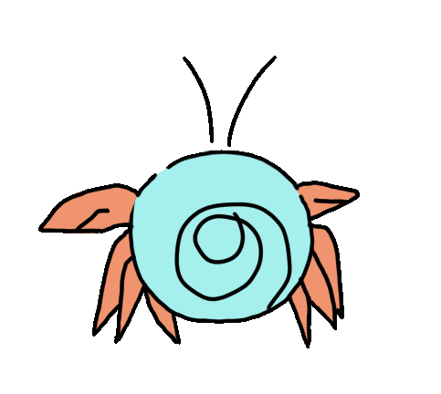
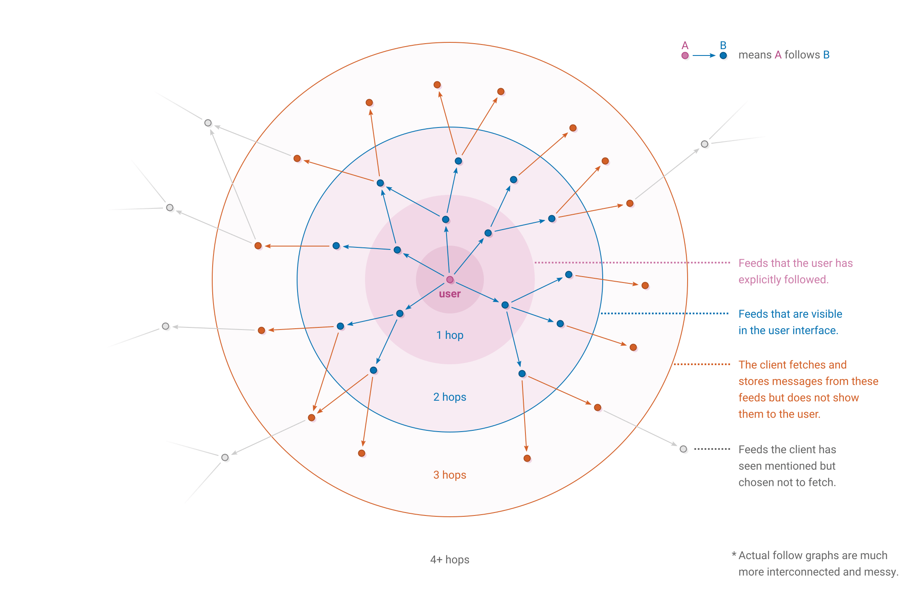
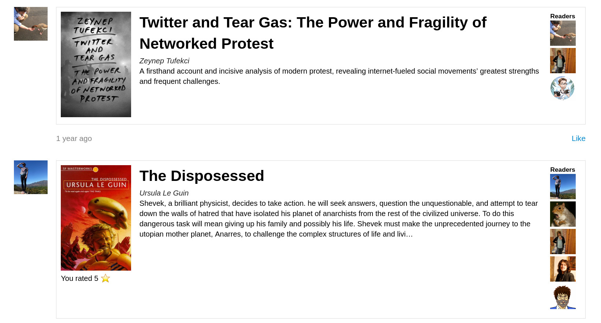
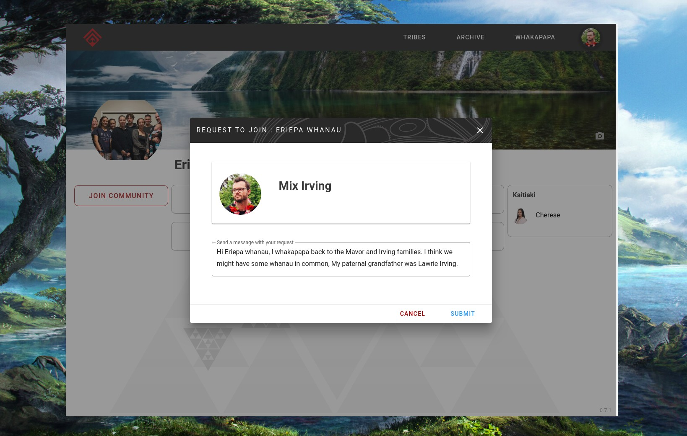
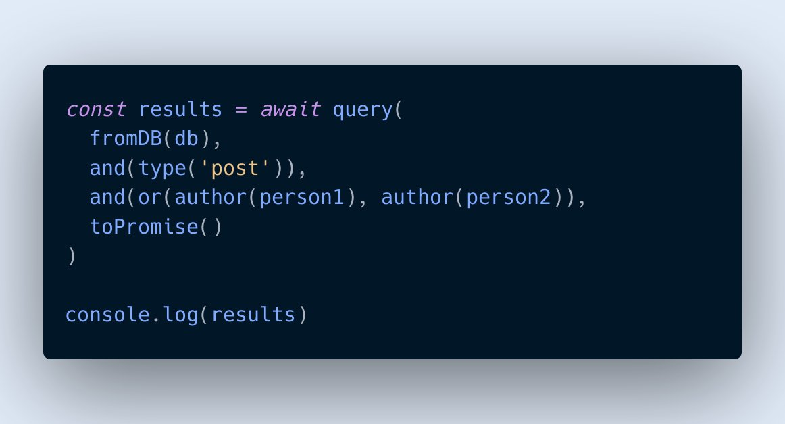
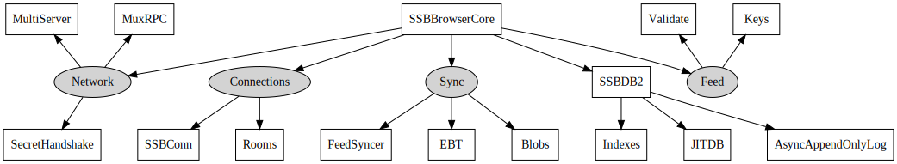
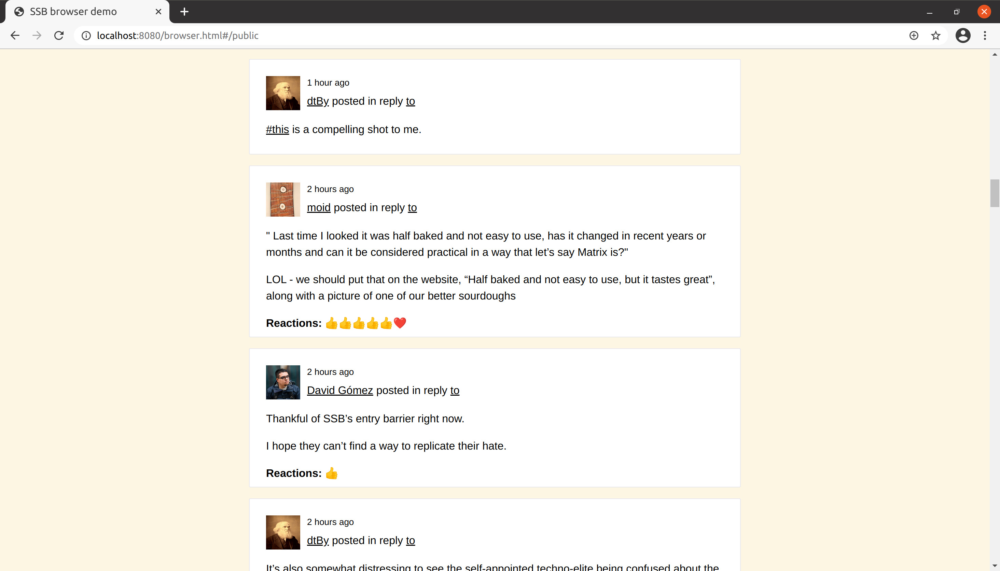
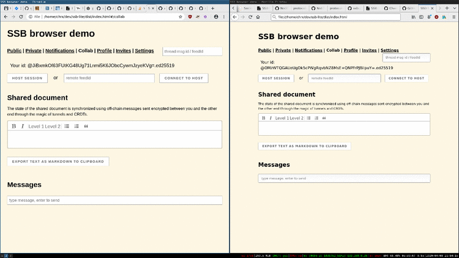

Butts in the browser
About me
Anders Rune Jensen
Masters from AAU 2006
Worked on secure scuttlebutt for 4-5 years
Application architecture
- Infrastructure / computers
- Data
- User interface
Standard web architecture

Web architecture
- Low-powered client, fat servers
- Data is centralised
- The UI is standardized with continous upgrades
Machine Learning
- Massive amounts of data
- User consented data, tracking data
- Used in opaque algoritms
- Black boxes are an attack vectors
Federated
- Servers run by many different parties
- Data on servers
- Diversity, local governance, community
- Tendency towards eventual centralisation
Distributed
- Thin servers, fat clients
- Data is local first
- The UI can be adapted to the community
Local first software
inkandswitch article:- fast
- multi-device
- offline
- collaboration
- longevity
- privacy
- user control
Summary
- Mindful of power structures
- Different approaches
- Pros / cons to all solutions
Scuttlebutt

Size is number of incoming connections, red are people with earlier network-birth, blue are newer people.
Scuttlebutt
- Identity centered
- Local first
SocialFriend network- Gossipping
Scuttlebutt feed

SSB
- Event sourcing
- Feeds are chains of immutable messages (8k limit)
- No global ledger consensus
- Public and private messages
- Larger files stored as blobs (5mb soft limit)
- Only you store your private key
Addressed by hash
- Signed and linked messages by hash
- No URL
- Location transparent
Gossipping
- Local network / bluetooth
- Pubs
- Rooms
- DHT
- Onion hidden services
- Sneakernets
Replication - pull feeds
Push updates
- Long running connections
- Epidemic broadcast trees
- Identity based, ordered logs
Caps

Software
- Implementations: javascript, go, rust, c, python
- Desktop: Patchwork, Oasis (web)
- Mobile: Manyverse, Planetary
- Browser: ssb browser demo
Patchwork

Apps
Book app
- Books are posted as messages
- Can be edited, reviewed by anyone using messages
- Data from your friends & friend of friends
Ahau
Git-ssb
- git init
- git add hello-world.js
- git ssb create ssb ssb-lite
- git push --tags ssb master
Created repo: ssb://%jfJAj+ssx9p9N85IN3Y00e3mXPqyYHKhShTeNwMap1w=.sha256 (ssb-lite)
Pushing blobs...
Published %al9oi9okem6YM5vbb/eh3L4e6h+dW8y9phvEFBfspOE=.sha256
To ssb://%jfJAj+ssx9p9N85IN3Y00e3mXPqyYHKhShTeNwMap1w=.sha256
Pushing blobs...
Published %al9oi9okem6YM5vbb/eh3L4e6h+dW8y9phvEFBfspOE=.sha256
To ssb://%jfJAj+ssx9p9N85IN3Y00e3mXPqyYHKhShTeNwMap1w=.sha256
NGI pointer team
NGI pointer
- Database improvements JS (10x indexing)
- SSB-DB2, JITDB
- EBT in Go
- Private group improvements
- Rooms 2: aliases, privacy modes
- Partial replication
Database improvements
- Async append-only log
- Binary In-Place Format (BIPF)
- JITDB
- LevelDB indexes
- DB2
JITDB
SSB in a browser
- SSB-DB2 works in the browser
- Key stored in localstorage
- Data stored in IndexedDB / Chrome FS
- WASM crypto
- WebSocket for pubs / rooms
SSB browser core
SSB browser demo
CRDT
URL centralization
- Same centralization as federated
- Run applications directly from SSB?
- Blobs as storage, messages as update channels
- Small core, run applications from friends